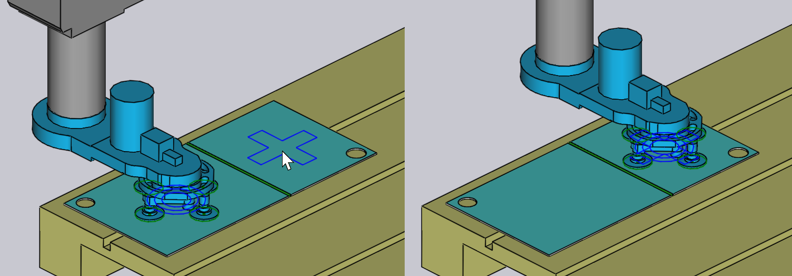

Recogida desde bandeja
Cuando se utiliza una succión de vacío o una pinza magnética, las piezas brutas (piezas planas) se recogen de una bandeja. Estos parámetros influyen en este proceso:
-
La posición de la bandeja en la celda de la máquina.
-
La posición y orientación de la pila de piezas en la bandeja.
-
La posición y orientación de la pinza de aspiración en la pieza.
-
La configuración de la ventosa de la pinza (qué ventosas están encendidas/apagadas, y qué tipo de ventosas están montadas en cada cabeza).
-
Las áreas de la pieza que son captadas por la cámara del robot y que se utilizan como referencias para calibrar la posición de la pieza.Los paneles utilizados para editar todos estos ajustes se muestran a continuación: todos están interconectados por enlaces de navegación arriba/abajo que conducen a otros paneles en una secuencia lógica:

Como muestra la imagen de arriba, también se puede acceder fácilmente a estos paneles con solo hacer clic en varios objetos de la simulación:
-
Para abrir el panel Bandeja, haga clic en una bandeja.
-
Para editar la pila de piezas en una bandeja (el panel de Recogida), haga clic en las piezas brutas tumbadas en la bandeja.
-
Para editar la posición de la pinza en la pieza bruta (el panel Pinza), haga clic en la pinza.
-
Para editar la configuración de la ventosa de una pinza (el panel Aspiración), haga clic en una de las ventosas.
-
Para editar las posiciones de imagen (utilizadas por el sistema de reconocimiento de posición precisa), haga clic en la cámara.
Panel Bandeja
El panel Bandeja se utiliza para seleccionar una bandeja y colocarla en la celda. Puede abrir este panel con solo hacer clic en una bandeja; Flux también posicionará la línea de tiempo de simulación para que el robot se coloque en el punto de recogida de la pieza de la bandeja.

-
Utilice la opción Nombre para seleccionar una bandeja diferente. Normalmente, solo se enumeran las bandejas que se pueden utilizar para esta pieza bruta, pero puede desactivar el control Filtrado y, a continuación, se enumerarán todas las bandejas disponibles.
-
Al pasar el ratón por encima de un nombre de la lista de nombres, se muestra un resumen rápido de esa bandeja, junto con una miniatura:

-
Utilice las entradas Posición para colocar la bandeja en Z y X (en coordenadas de celda), y utilice la entrada Ángulo para rotar la bandeja. A medida que mueve o gira la bandeja, la pila de piezas en la bandeja y la pinza/robot siguen el movimiento.
-
Utilice los botones Continuar y Volver para navegar a las otras bandejas de la celda; por ejemplo, la bandeja con las operaciones de depósito de piezas.
-
Utilice el botón de navegación Soporte para editar la posición de apilamiento de piezas en la bandeja.
-
Utilice el botón Config. Memoria debajo de la sección Ampliado para guardar esta configuración de celda (incluidas todas las bandejas) como predeterminada para esta máquina.
Panel de recogida
El panel Recogida se utiliza para editar la posición de la pila de piezas en la bandeja.Puede abrir este panel directamente haciendo clic en la pila de piezas brutas que se encuentra en la bandeja. (También se puede acceder a él a través del enlace Soporte desde el panel Bandejas).

-
Utilice las entradas Posición para colocar la pila en la bandeja; estas coordenadas especifican el centro de la pieza en Z y X, relativo a la esquina de la bandeja, y se encuentran en el espacio de coordenadas locales de la bandeja.
-
Utilice la entrada Ángulo para girar la pieza en la bandeja.
-
Utilice el Girar pieza interruptor para voltear la pieza. Tenga en cuenta que esto generalmente significará que será necesaria una operación de agarre posterior adicional antes de que se pueda procesar el primer plegado (esa se añadirá TecZone Bendautomáticamente).
-
Utilice el enlace Cámara… para cambiar al panel Cámara, donde puede configurar la fase de reconocimiento de imágenes de la recogida.
-
El enlace Puntos de apoyo… muestra el editor Waypoints donde puede ajustar la trayectoria del robot durante la recogida.
-
El enlace Estación agarre post. muestra el panel Estación de giro de agarre donde puede configurar la posición de la estación de giro de agarre durante la operación de recogida.
A medida que la pieza se mueve por la bandeja, la pinza permanece adherida a la pieza y el robot sigue sus movimientos.
Panel de pinza
El panel Pinza se utiliza para seleccionar una pinza diferente o para cambiar la posición y la orientación en la que la pinza recoge la pieza.
-
Utilice la opción Nombre para seleccionar una pinza diferente. Normalmente, solo se muestran las pinzas adecuadas para esta pieza (según el tamaño de la pinza y la carga útil), pero puede desactivar la verificación Filtrado y luego se enumeran todas las pinzas.
-
Al mover el ratón sobre un nombre de la lista de pinzas, se muestra un resumen de esa pinza, junto con una miniatura:

-
Utilice las entradas Posición para mover el centro de la pinza en relación con el centro de la pieza, y utilice la entrada Ángulo para girar la pinza, relativa a la orientación de la pieza.
-
Utilice el enlace Ventosa para cambiar a una edición precisa de la pinza (seleccionando diferentes ventosas, activando/desactivando ventosas).
-
El botón Seleccionar la superficie de agarre se puede utilizar para colocar la pinza en un plano diferente. Normalmente, el plano más grande del modelo se utiliza para posicionar la pinza. Si desea cambiar esto, haga clic en este botón. A continuación, haga clic en el plano donde se debe colocar la pinza:
 -
El botón Utilizar la pinza de tenaza se utiliza para cambiar esta pieza al uso del dispensador de piezas y la pinza de mordaza (pinza mecánica). Todas las etapas del ciclo de plegado desde la recogida hasta el depósito se vuelve a calcular utilizando la mordaza gripper[1].
Advertencias de aspiración
Si la pinza se mueve de modo que algunas de las ventosas queden fuera de la chapa, o colocadas sobre agujeros en la pieza, las ventosas se resaltan y aparece un error en la
columna Recogida del navegador, como se muestra en la imagen a continuación:

Menú de acciones
El botón Acciones se utiliza para abrir un menú que proporciona algunas acciones útiles en la pinza:
-
Cambio automático Intenta reposicionar la pinza sobre la pieza, asegurándose de que todas las ventosas se encuentren dentro de la pieza y no sobre ningún orificio (si es posible).
-
Desconexión de vaso de succión no hermético: Desactiva todas las ventosas que se encuentran sobre agujeros, o están fuera de los límites part[2].
-
Desconexión de todos los vasos de succión: Activa todas las ventosas que están apagadas.
-
Config. Memoria: Si configura la pinza desactivando o quitando algunas ventosas, o cambiando las longitudes o ángulos de los brazos (para Multi-Pinzas que pueden cambiar de forma), puede guardar la configuración alterada de la pinza con un nuevo nombre, para una fácil reutilización.
-
Exportar pinza: Guarde la pinza actual como archivo .fxbgrip que se puede importar a otra instalación de TecZone Bend. Esto es útil si ha importado una pinza personalizada y necesita compartirla con otras instalaciones.
Panel de succión
El panel Succión se utiliza para configurar el diseño de la ventosa de una pinza. Puede abrir este panel haciendo clic directamente en una ventosa o eligiendo el enlace Succión desde el panel de la pinza.

-
Utilice la opción Ventosa # para seleccionar una ventosa en particular en la pinza, o use los botones Continuar y Volver para navegar a través de las ventosas. La ventosa seleccionada está resaltada en azul y se puede editar.
-
Para cada ventosa, puede ajustar Estado en On, Off o Retirada.Consulte la siguiente descripción para obtener más información al respecto.
-
Utilice el panel Tipo para cambiar a un tipo diferente de ventosa.Por lo general, se cambian todas las ventosas de una pinza al nuevo tipo, pero también se pueden mezclar y combinar las ventosas apagando el botón Cambiar todo y luego cambiando las ventosas. (Tenga en cuenta que cuando hace esto, la elección de las ventosas estará restringida, ya que todas las ventosas montadas en un marco de pinza deben tener la misma altura de trabajo). La imagen de arriba muestra dos de las ventosas reemplazadas por ventosas más pequeñas (SAXM50, en lugar de la SAXM80 predeterminada).
-
Utilice el botón Reset para restaurar la pinza a su estado original: todas las ventosas están activadas y se restablecen al tipo de ventosa predeterminado que está definido en la pinza.El estado predeterminado para una ventosa es On, lo que significa que las ventosas están conectadas a la línea de vacío y ayudan a levantar.Si una ventosa se encuentra sobre un orificio en la pieza, puede cambiar el estado a Off, que significa que no hay vacío. (Esto reduce la elevación de la pinza y cambia el centro de elevación, lo que Flux tiene en cuenta para realizar las comprobaciones de capacidad de la pinza). Tenga en cuenta que la ventosa está todavía montada en el marco, y participa en las comprobaciones de colisión. Flux muestra ventosas desactivadas como estructuras de alambre, como se puede ver con dos de las ventosas en la imagen de arriba.Por último, puede establecer una ventosa en Retirada, lo que significa que la ventosa ha sido retirada del marco en la máquina real. No hay elevación de esta ventosa y no causará una colisión. Esto a veces es útil si una ventosa cae sobre una región formada,o causa una colisión con la matriz o la mesa de la máquina durante el funcionamiento.
Panel de cámara
El proceso de recogida requiere que la cámara capture una o más imágenes, y un sistema de procesamiento de imágenes que utilice estas imágenes para estimar exactamente dónde está la pieza en la bandeja. Al hacer clic en la cámara montada en el robot o elegir el botón de navegación Cámara del panel Recogida se abre el panel de la cámara. Flux también posiciona la simulación para que el robot esté en la posición requerida para capturar la imagen:

-
Utilice la lista Índice (o los botones Continuar y Volver) para recorrer las diversas imágenes de reconocimiento preciso que se utilizan para esta pieza.Al hacer esto, Flux muestra un contorno naranja que indica la zona de reconocimiento de imágenes en la pieza (véase la imagen de arriba).
-
Utilice las entradas Posición para reposicionar esta zona en Z y X para incluir mejor algunas características de interés que pueden mejorar la precisión de reconocimiento (esquinas, agujeros pequeños, muescas).
-
Utilice el botón Añadir para añadir una imagen de reconocimiento adicional (hasta 4) y utilice el botón Eliminar para eliminar la imagen de reconocimiento actual. Durante la simulación de la recogida de piezas, Flux muestra el robot moviéndose a cada una de estas áreas de reconocimiento con la cámara hacia abajo y haciendo una pausa para adquirir la imagen.Si el interruptor Utilizar la luz transmitida está activado, entonces la pieza se transfiere a una mesa iluminada antes de que la cámara la utilice para obtener imágenes. Esto aumenta el contraste y es útil para piezas altamente reflectantes. TecZone Bend añade la mesa de retroiluminación y la coloca cerca de la bandeja de recogida automáticamente, pero luego puede configurar la posición haciendo clic en ella: